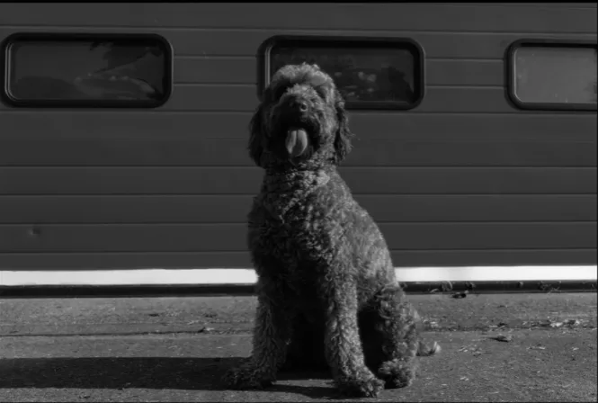

Top bar
Every control here is the app's own top bar, captured from the running app, in its current order. Only the look is new. gallery / studio swaps between the Library and Editor bars, as in the app: click a word, or drag or throw the slab. Sort and the gear open their real menus.
Side menu, grid, filmstrip
Click photos to select them. The grid is always in colour; the docked filmstrip stays black and white until hovered or selected. (The selfie and two dog samples are black-and-white files themselves, cropped from your screenshot; the canal shows the grid's colour.) The side menu's highlight slides between rows.
Collections
Folders
Buttons
Shown with the hover style picked under Hover & selection (switch it there to compare others).
Toggle · slider · segmented · chips
Toggle keeps the current tumble. The slider keeps the rolling square: the dot above the line marks where it resets to, the thumb fills once moved away from it, and double-click resets. Segmented controls sit on a baseline rule with the slab filling the chosen cell.
Select · menu · search · section card
On-photo tools
Square handles, no colour slabs, so they never compete with the photo.
Loading screen
